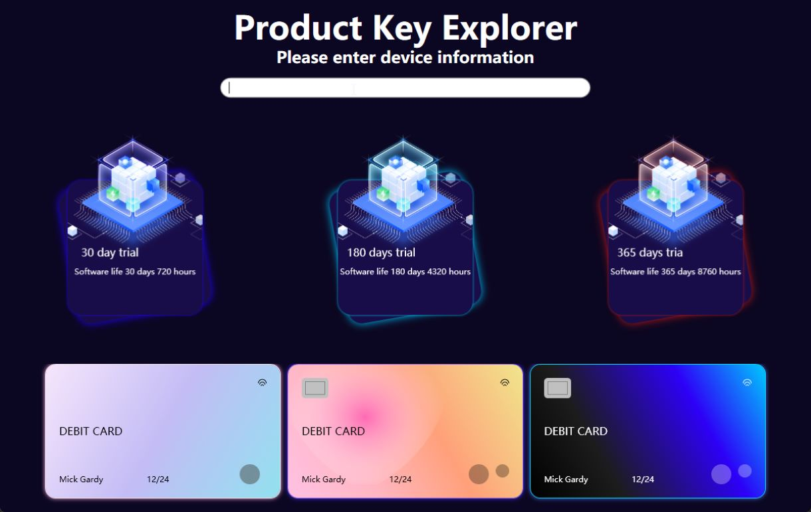

📏 设计原则与最佳实践
内存与资源管理：
- 正确管理事件订阅和取消订阅，使用 using 语句或实现 IDisposable 接口，确保资源及时释放，防止内存泄漏
- 有效管理文件句柄、数据库连接等资源，避免资源耗尽
错误处理与日志记录：
- 提供具体的错误信息，使用自定义异常类，捕获和处理预期外的异常，确保应用程序的健壮性
- 记录关键操作、错误和调试信息，便于后续调试和维护
设计原则（SOLID）：
- Single Responsibility Principle (单一职责原则)
- Open/Closed Principle (开闭原则)
- Liskov Substitution Principle (里氏替换原则)
- Interface Segregation Principle (接口隔离原则)
- Dependency Inversion Principle (依赖倒置原则)
- DRY (Don't Repeat Yourself): 避免代码重复，通过重用和模块化提升代码质量
- KISS (Keep It Simple, Stupid): 保持设计简单，避免不必要的复杂性
- YAGNI (You Aren't Gonna Need It): 仅实现当前需求，避免过度设计
架构模式：
- MVVM (Model-View-ViewModel): 分离UI与业务逻辑，提高代码的可测试性和可维护性
- 依赖注入 (Dependency Injection): 使用依赖注入框架管理对象的生命周期和依赖关系，增强模块解耦
- 选择合适的设计模式（如工厂模式、策略模式、观察者模式等）提升代码复用性和扩展性
测试与质量保障：
- 编写全面的单元测试，使用测试框架确保代码的可靠性和健壮性
- 集成测试验证不同模块之间的协作，确保系统整体功能的正确性
- 持续集成/持续部署 (CI/CD): 实施 CI/CD 流程，使用工具自动化构建、测试和部署，提高开发效率和发布质量
代码规范与文档：
- 遵循一致的命名规范和编码风格（Microsoft C# 编码规范），提升代码的可读性和一致性
- 定期进行代码审查，确保代码质量、遵循规范并发现潜在问题
- 编写清晰的代码注释和技术文档，记录设计决策，便于团队协作和知识传承
性能与优化：
- 使用性能分析工具（如 Visual Studio Profiler、dotTrace）定期分析和优化代码性能
- 利用
async/await和异步编程模式，提高应用程序的响应性和吞吐量 - 实施有效的缓存策略，减少重复计算和数据访问，提高系统性能
可扩展性与可维护性：
- 采用模块化设计，分离不同功能模块，提升系统的可扩展性和可维护性
- 使用接口和抽象类定义模块边界，促进代码解耦和灵活性
国际化与本地化：
- 实现应用程序的国际化和本地化，支持多种语言和区域设置，提升用户体验
版本控制与协作：
- 使用 Git 等版本控制系统管理代码，采用分支策略促进团队协作和代码管理
🕒 实时运行信息

📊 数据表格

📈 数据可视化 v2024_05_beta

📉 数据可视化 v2024_07_beta

🗝️ 产品密钥生成
